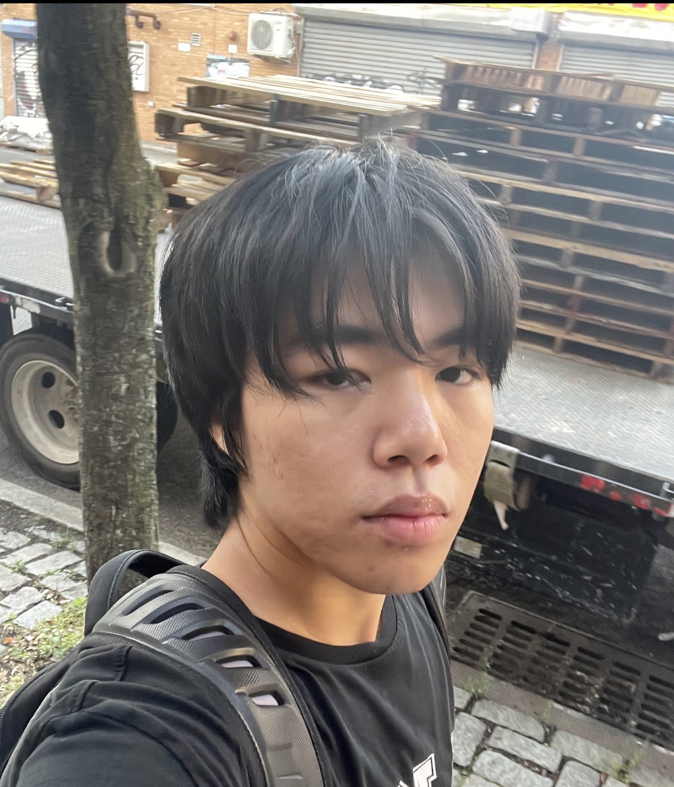

About Me
My name is Leo, and I'm an undergraduate business administration major at LaGuardia Community College combining data analytics (SQL, Python, Excel) with practical experience in project management, e-commerce, and business development. Experienced in building outbound sales pipelines, optimizing CRM workflows, and driving operational efficiency across internship and retail roles.
Hobbies: In my free time, I enjoy going to the gym, reading books and articles, and researching investment opportunities in the stock market.
"The best investment you can make is in yourself." — Warren Buffett
Process Automation & Operational Efficiency
Engineered automated reporting pipelines, Slack APIs, Custom OKR forms, and Email Scripts, successfully cutting manual status-tracking by 40%.
Logistics: Optimized package fulfillment and receiving process achieving a 95% delivery accuracy minimizing errors.
Data-Driven Decision Making & Analytics
Modeled historical sales data using Excel (Pivot Tables, VLOOKUP) to recommend pricing strategies that drove a 15% revenue increase at Queens Botanical Garden.
Analyzed and segmented 500+ prospect records at QUAY Acceleration to define the Ideal Customer Profile (ICP).
Process Design & Cross-Functional Leadership
Designed comprehensive Standard Operating Procedures (SOPs) for attendance and check-ins at Youth4am.
Coordinated remote and field workflows via centralized calendars ensuring 100% on-time delivery, and documented field observations into strategic investment roadmaps at Grain Collective.
Business Related Internships
Community Engagement Intern
Facilitated community feedback sessions, boosting public engagement by 25%.
Project Manager Intern
Designed an automated reporting pipeline and custom OKR intake system.
Business Development & Sales Lead Intern
Engineered a prospect database of 500+ qualified leads across finance and startups.
Operations Intern
Supported event operations and visitor engagement; attended to the guests participating in events, hosting 35+ attendees.